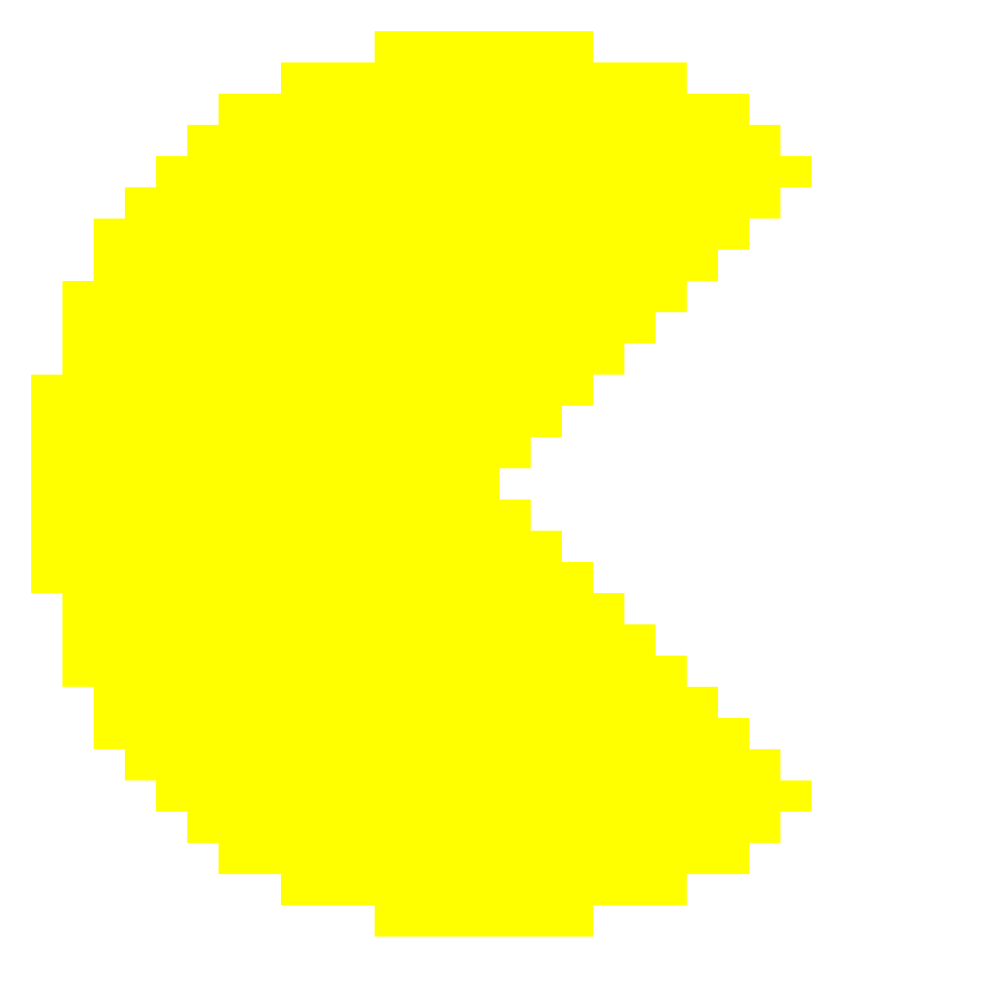

Escolha as dimensões do próximo labirinto.
Há cenários locais pré-gerados para as dimensões disponíveis; no tamanho padrão 21×9, há 12 opções. O jogo seleciona uma delas aleatoriamente para o tamanho escolhido.
